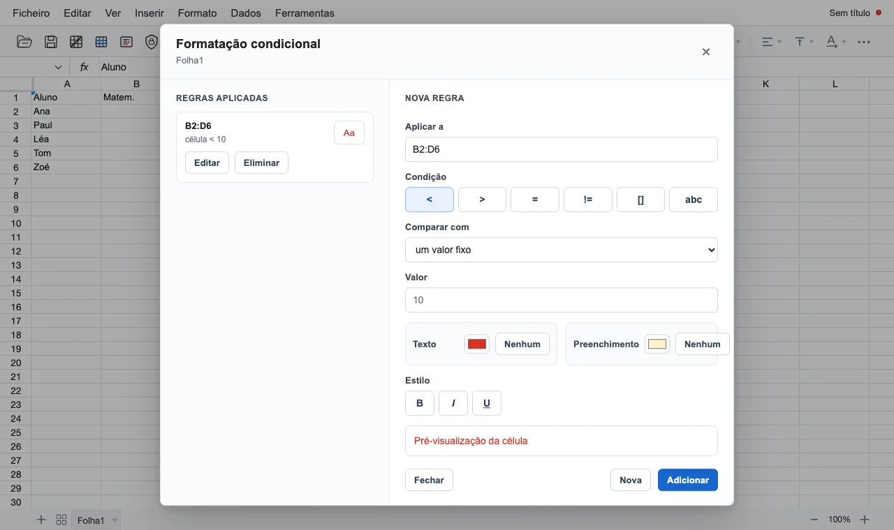

Formatação condicional
Uma regra muda o aspeto das células de um intervalo que cumprem uma condição. Acompanha os valores, introduzidos ou calculados.
Criar uma regra
- Selecionar o intervalo, sem o cabeçalho.
- ou Formato › Formatação condicional.
- Escolher a condição, o valor a comparar, as cores ou o estilo.
- Adicionar.

| Condição | A célula |
|---|---|
< | é inferior a |
> | é superior a |
= | é igual a |
!= | é diferente de |
[] | está entre dois valores, extremos incluídos |
abc | contém um texto, maiúsculas ou minúsculas |
Com que comparar
| Comparar com | Exemplo |
|---|---|
| um valor fixo | as notas inferiores a 10 |
| uma célula fixa | as notas inferiores ao limiar escrito em F1 |
| uma coluna da mesma linha | na coluna C, os valores superiores aos da coluna B, linha a linha |
Aspeto
Texto e Preenchimento escolhem as cores, Nenhum retira-as; B, I, U põem em negrito, itálico, sublinhado. É preciso pelo menos uma cor ou um estilo.
Várias regras
A coluna da esquerda lista as regras da folha: Editar, Eliminar. Se várias regras se aplicam a uma célula, prevalece a última da lista, cor a cor.
Num intervalo coberto por uma regra, as cores de texto e de fundo dadas diretamente às células deixam de se mostrar.
As regras são guardadas no ficheiro Excel como formatações condicionais do Excel.